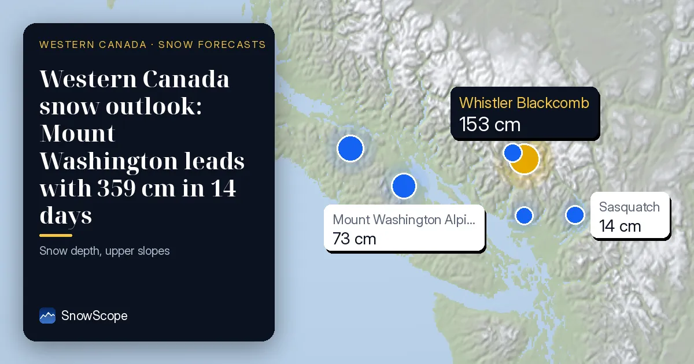
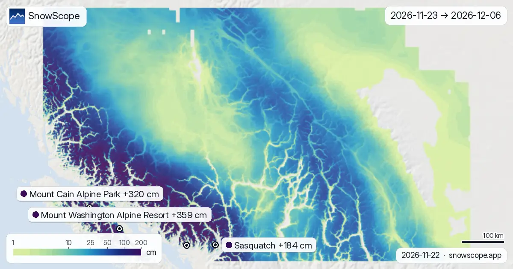

Western Canada snow outlook: Mount Washington leads with 359 cm in 14 days
The first week will bring half of this total, with the strongest storms hitting late November.
See the live snow forecast for Mount Washington Alpine Resort in the SnowScope appSnow depth, powder alerts and the 3D map, free.
Which resorts will see the most snow
Mount Washington leads the region with 359 cm expected by 6 December, followed by Mount Cain Alpine Park with 320 cm. Both resorts sit around 1500 m and will capture moisture from Pacific storms. Whistler Blackcomb, at higher elevation (2259 m), forecasts 222 cm due to orographic effects that favour lower slopes in this pattern. Lower resorts like Sasquatch and Mt Seymour receive less, around 167-184 cm, as they sit below the zone of heaviest precipitation.
The uncertainty is real. The Forecasts disagree on the amount for each resort by roughly 30 to 40 percent. Mount Washington's range is 200 to 518 cm; Mount Cain's is 166 to 474 cm. These margins reflect the difficulty of predicting storm tracks and intensity two weeks ahead.
| Resort | Snow depth | New snow, 72 h | Coming, next days | Top |
|---|---|---|---|---|
| Mount Washington Alpine Resort | 73 cm | 9 cm | 121 cm | 1,569 m |
| Mount Cain Alpine Park | 92 cm | 2 cm | 132 cm | 1,616 m |
| Whistler Blackcomb | 153 cm | 5 cm | 101 cm | 2,259 m |
| Sasquatch | 14 cm | 2 cm | 27 cm | 1,316 m |
| Mt Seymour | 11 cm | 4 cm | 19 cm | 1,255 m |
| Ski Callaghan | 16 cm | 3 cm | 54 cm | 998 m |

When the snow falls: week one dominates
Half of all snow arrives in the first week (23-29 November). Mount Washington will see 233 cm then, with its heaviest day on 24 November (77 cm). Mount Cain peaks on the same day with 62 cm. This concentrated burst is driven by a strong Pacific system moving through mid-week.
Week two (30 November to 6 December) brings the remaining half. Snow is spread more thinly across individual days, but another pulse hits around 3-4 December and again on 6 December. At Mount Washington, 6 December will deliver 42 cm as a system pushes through late in the period.

Snow by elevation: the 1500-2000 m sweet spot
Across all terrain in Western Canada, the 1500-2000 m band receives the most snow over the 14 days: a median of 26 cm and up to 44 cm in some areas. This is where the resorts sit, and it explains why Mount Washington and Mount Cain perform well. Above 2500 m, totals drop to 16-20 cm median, as cold, dry air becomes dominant. Below 1000 m, only 10 cm median falls, and at low elevations rain may mix in.
About 198,000 km² of the region's mountain terrain will receive 20 cm or more. Some 76,600 km² will see 50 cm or more, mostly between 1500 and 2000 m elevation. This is water stored in the snowpack for rivers and reservoirs downstream.

What to watch in the coming days
The first three days (23-25 November) set the tone. If the Pacific system tracks further north or south than expected, resorts will see notably different totals.
Early-season snow at lower elevations may be thin or sit on wet ground. Rock outcrops on steep terrain at Sasquatch and Mt Seymour (both under 15 cm today) could remain exposed even after the first storms. Mid-mountain terrain at Mount Washington and Mount Cain should build a usable base by late November if the forecast verifies.
Tips for skiers
- Watch the storm on 24 November. Mount Washington and Mount Cain will likely see the most reliable early snow then; plan your first visit around this pulse if conditions are skied.
- Aim for upper slopes above 1500 m in the first week for the deepest snow. Lower elevations and lower resorts will lag by 50 cm or more.
- Late November offers better snow depth than early December. Week two snow is lighter and more scattered; don't wait until after 1 December if you want early-season powder.
- Check official avalanche bulletins if you venture off-piste, especially after the 24 November dump when slope stability will be in question.
- Revisit this forecast mid-week.
About these numbers
Resort snow depths are the deepest snow on the resort's upper slopes on the date shown; they are estimates for an area, not a measurement at one point. Forecasts can change. Always read the official avalanche bulletin before going off-piste.
Official avalanche bulletins: Avalanche Canada
Cite this report
For research, teaching or the press: the numbers and charts are free to reuse under CC BY 4.0 with this citation.
SnowScope (2026), Western Canada snow outlook: Mount Washington leads with 359 cm in 14 days, https://snowscope.app/blog/en/2026/11/western-canada-2-week-snow-forecast-maps-22-november-2026.html, accessed 2026-11-22
SnowScope (Atlas Labs). (2026, November 22). Western Canada snow outlook: Mount Washington leads with 359 cm in 14 days. SnowScope snow reports. https://snowscope.app/blog/en/2026/11/western-canada-2-week-snow-forecast-maps-22-november-2026.html
BibTeX
@misc{snowscope2026westerncanada2weeksnowfo,
author = {{SnowScope (Atlas Labs)}},
title = {Western Canada snow outlook: Mount Washington leads with 359 cm in 14 days},
year = {2026},
month = nov,
howpublished = {\url{https://snowscope.app/blog/en/2026/11/western-canada-2-week-snow-forecast-maps-22-november-2026.html}},
note = {Published 2026-11-23 00:50 UTC; accessed 2026-11-22}
}· CC BY 4.0 · Methods, data and tools →
Mount Washington Alpine Resort: snow and temperature by height, this winter vs last (tools) →
Follow Mount Washington Alpine Resort
Free: a message when fresh snow is coming, and the forecast every morning.
More snow reports

Whistler Blackcomb's upper slopes hold 8.7 ft (266 cm) after a 4.6 ft (141 cm) three-day storm. What 46 winters say about Christmas, and why the valley is the only question.

Whistler Blackcomb leads Western Canada with 153 cm on upper slopes. Snow covers 398,620 km² across 52 of 57 resorts on 22 November.

Whistler Blackcomb has 136 cm on upper slopes this weekend, but snow thins fast below 1500 m. Plan runs by elevation. Data from 19 November.